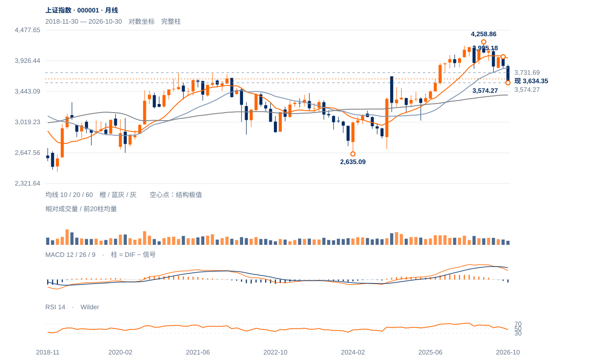

区间偏弱
低位支撑尚在，但反弹没有完成结构反转。当前更倾向再次测试3624及3574—3580，只有重夺中峰并保持，才能提高底部成立的判断。
低位支撑尚在，但反弹没有完成结构反转。当前更倾向再次测试3624及3574—3580，只有重夺中峰并保持，才能提高底部成立的判断。
未来2—6周以3574—3732反复筑底为主情景，弱反弹后再试下沿的风险较大。只有完整周收回3732，才有向3812附近中期均衡区扩展的依据。
未来1—3个月偏向消化长线涨幅后的区间重建。若周收连续两周低于3574，关注3447半幅回撤及3392附近长期均衡；若重新站稳3812并出现较高周谷，才上调为中期恢复。

展开图表 ↗2024年2月2635.09至今年5月4258.86的上涨，已回撤38.46%，现价靠近3638.58的38.2%回撤位。2024年10月3674.40与2021年3731.69构成旧突破区域，价格重新落入其下方；这比近两周的双谷更能解释当前分歧。10月月收3599.02仍高于60月均线3391.66，但低于20月均线3812.02，处于长期涨幅回吐、尚未重建中期升势的位置。
5月4258.86后，9月3995.18、3967.68构成较低高区，随后跌至10月23日3574.27；反弹连3708.20都未收复。周线仍是下降后的低位停留，日线两个近邻谷底尚不足以逆转半年调整。3574附近有实际价格支撑，3639只有比例参照，二者不能合并为已经确认的大底。
3574.27与3580.38构成局部双谷候选，3708.20中峰尚未突破。当前空间先由3574下沿与3674—3732旧高带约束。
10月23日3574.27与11月3日3580.38仅差0.17%，但中间反弹仅3.75%、谷距7日；3708.20中峰未突破。局部双谷值得观察，不能视作成熟大底。
11月5日3701.59于12日完成右侧确认，仍低于3708.20；本周最高3699.58，再次未越过原高区。13日收3634.35，回到20日线下方。
10月30日以来尾段历时10日、净升仅0.98%，日均量约为前跌波1.10倍。量未明显不足，但价格推进有限，支持低效修复而非趋势突破。
先收复3669，再检验3702的原连续两日条件及3708中峰保持。
3574旧结构底线失守，撤销当前守底解释。
卖方虽占周线优势，3574—3580仍未下破；长期回撤比例和旧交易区重合，可能产生比当前日线弱势更强的反击。
| 周期 | 最后完整柱 | 图示柱数 | RSI14 | ATR14 | MACD柱 |
|---|---|---|---|---|---|
| 日线 | 2026-11-13 | 185 | 39.79312 | 52.05545 | 7.33175 |
| 周线 | 2026-11-13 | 156 | 32.92546 | 112.60288 | -28.83454 |
| 月线 | 2026-10-30 | 96 | 46.75733 | 237.37501 | -47.01573 |
国内完整周线至11月13日；11月月线进行中。指数价格不复权，长期历史按实际可用起点。